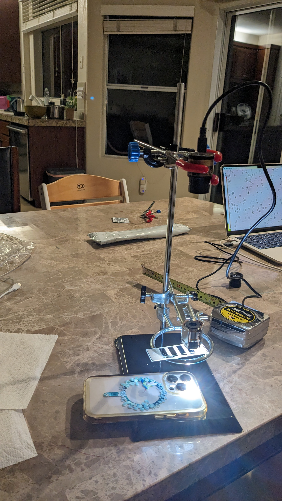
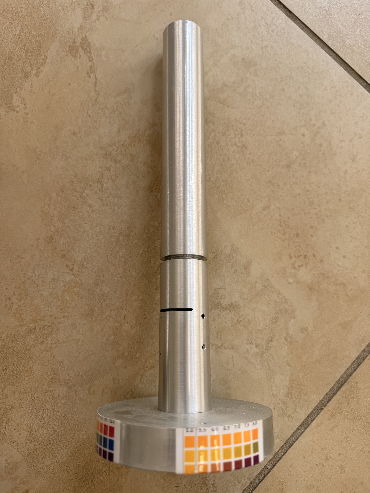
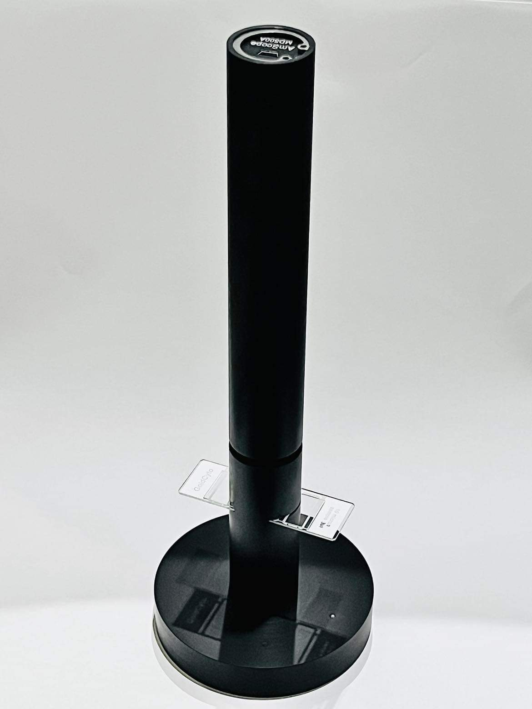
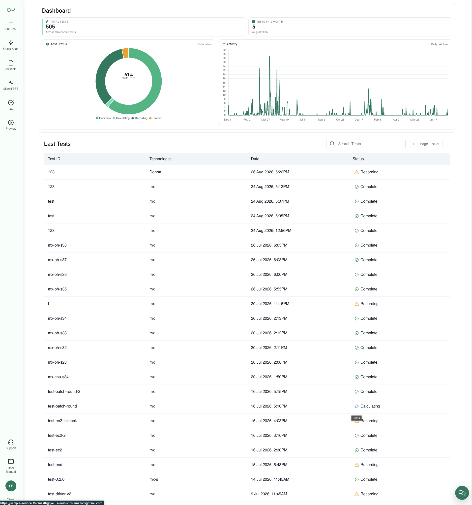
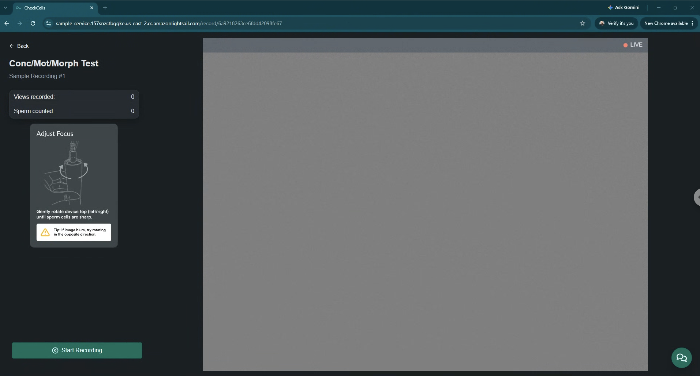
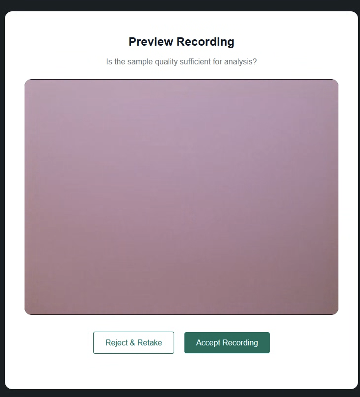
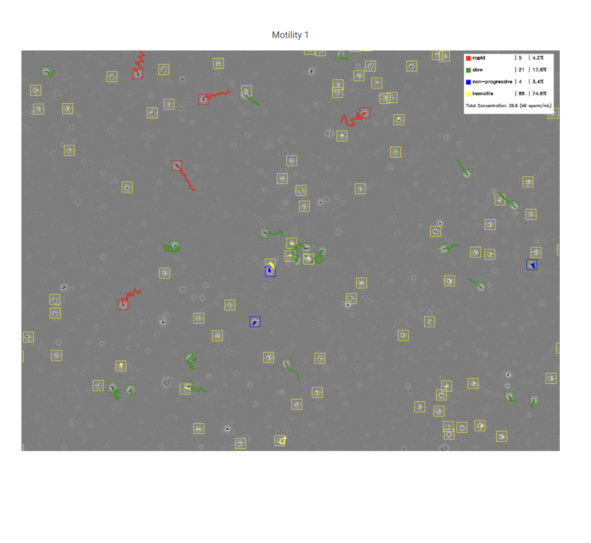
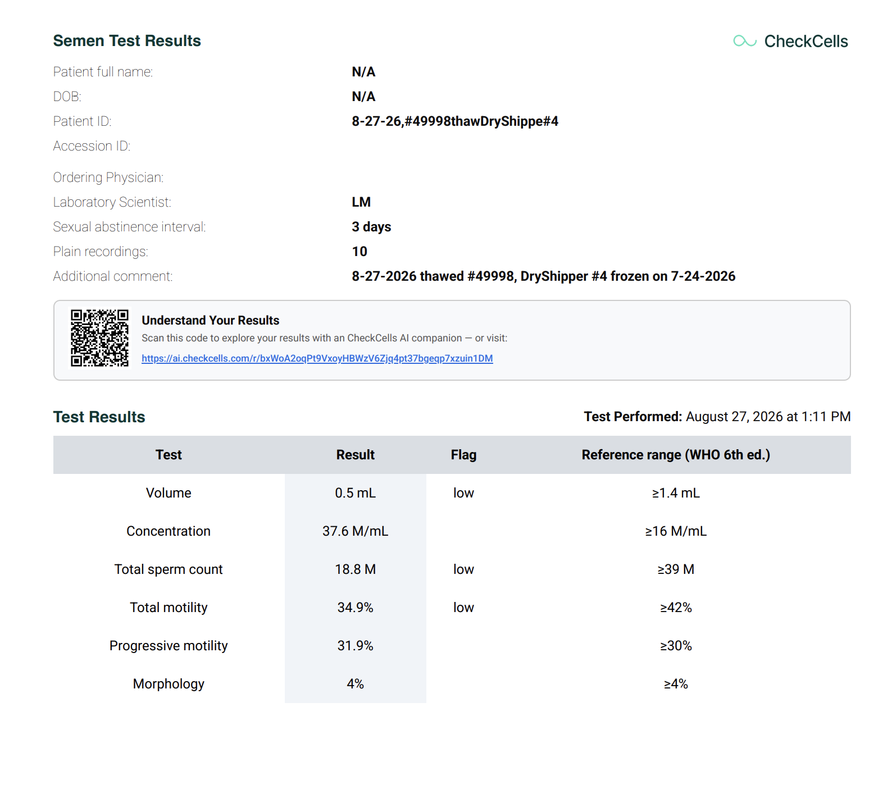

CheckCells / Seaman PRO: AI-Powered Laboratory Analysis System
A six-month product development contribution spanning imaging hardware, laboratory software validation, computer vision testing, and iterative improvements driven by real laboratory use.
1. Product & Context
Manual semen analysis in fertility laboratories is labor-intensive, operator-dependent, and prone to significant variation. CheckCells developed Seaman PRO as an automated laboratory system providing quantitative semen parameters (Concentration, Motility, Morphology, Vitality, and pH) referenced against WHO 6th edition guidelines.
My contribution focused on the intersection between physical hardware, laboratory usability, software verification, and computer vision model validation.
2. Laboratory Feedback & Iteration Loop
Product improvements were driven by continuous operational feedback from partner fertility clinics. I did not conduct customer interviews directly; feedback from laboratory operators was relayed through the team, and I collaborated with the CTO and CEO to translate operational friction into hardware revisions, testing protocols, and product refinements.
3. Hardware Evolution (V1 → V4)
Over three years of clinic testing, we iterated through four physical architectures to resolve focal stability, vibration, and multi-chamber slide positioning:




4. Validating the Laboratory Software Workflow
The laboratory web application manages test records, processing states, and results across the analysis workflow. My role focused on testing the software from the user perspective: running workflows, identifying bugs and friction points, comparing system output against expected behavior, reporting issues directly to developers, and retesting updated builds.

5. Connecting Physical Adjustment with Software Feedback
Optical sharpness directly impacts computer vision model accuracy. The application pairs on-screen guidance with physical camera rotation, followed by a human verification step before calculations begin:


6. Human Validation of Computer Vision
Early versions of the model struggled to reliably distinguish sperm cells from non-cellular debris, sometimes missing individual cells or grouping multiple objects incorrectly. I carried out a systematic manual validation routine to support model refinement and validation:

- Dataset Annotation: Used Label Studio to annotate approximately 500 images and video frames, supporting model training and validation by improving differentiation between sperm cells and debris.
- Reference Benchmarking: Manually compared AI detections against manual reference counts, documenting discrepancies and verifying changes after model updates.
7. Wait Time as Part of the User Experience
In a clinical laboratory workflow, waiting time is part of the user experience. I tested successive builds and documented how capture and processing felt in actual lab use:
Image capture dropped from around 40 seconds to about 7 seconds. That improvement was partly UX: tightening the number of pop-up dialogs, cutting unnecessary steps from the capture journey, and simplifying on-screen prompts so operators could complete a recording without extra interruptions. Cloud calculation, by contrast, was an engineering pipeline change — from roughly 15 minutes to under a minute. Together, those shifts meant operators could stay in the workflow instead of parking a sample and coming back later.
8. Extending the Product Beyond the Laboratory
The broader CheckCells ecosystem continues after laboratory analysis. Results are delivered through patient reports containing a QR link to an AI companion that can explain terminology and individual report elements. The assistant is designed for education and clarification rather than diagnosis.

9. Designing Beyond the Interface: Instructions for Use (IFU)
Hardware usability in medical laboratory systems relies heavily on clear, standardized documentation. I co-authored the Seaman PRO Instructions for Use (IFU) manual, translating complex laboratory procedures into step-by-step guidance covering:
- Pre-analytical sample handling, liquefaction timing, and dilution.
- Multi-chamber slide filling and mechanical wayfinding into the device holder.
- Live optical focus adjustment and video recording quality gates.
- Post-test cleaning, disinfection protocols, and quality control procedures.
10. My Direct Contribution vs. Broader Product Ecosystem
To provide full transparency on project ownership and cross-functional collaboration:
| My Direct Contribution | Broader Product Ecosystem |
|---|---|
|
|